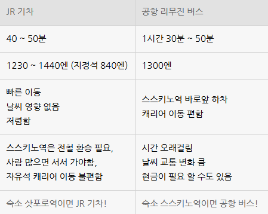
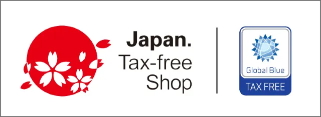

- 대중교통
- 쇼핑
- 환전/출금
- 회화
-
※ 공항 내 2-3층에 ATM 있으니 환전해서 이동.
※ 공항 버스 왕복권(4,900엔-2인 가격) 구매해서 이동하는 것을 많이 추천함.
-
공항 버스
국내선(지하 1층) 22번/14번 정류소 & 국제선 84번

공항 → 스스키노 ↗ -
도보
삿포로는 계획 도시로 "삿포로역 - 스스키노 - 오도리역" 지하도로 연결 되어 있어, 우천 시 이동하기 편리함.
-
택시
우버 어플로 택시 이용. 첫 이용 시 2천원 쿠폰 제공됨. 택시 이용시 기사님에 따라 다른데 거리 요금이 예상 금액보다 초과 되어 나온 경우 우버 고객센터에 문의하면 그 거리만큼만 환불해줌.
-
면세
TAX FREE, Japan Tax-Free Shop, 免税 표시가 있고 5천엔(세전) 이상 구매 시 텍스 리펀 가능.

-
ATM 출금
-
회화
- ~ 아리마스까?
- ~ 있나요?
- 히토츠
- 한 개
- 후타츠
- 두 개
- 후쿠로
- 봉투
- 오네가이시마스
- 부탁드립니다
- 삿포로에키에 이키마스카?
- 삿포로역 가나요?